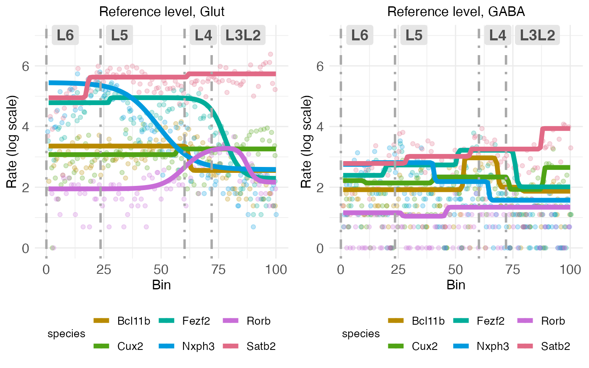
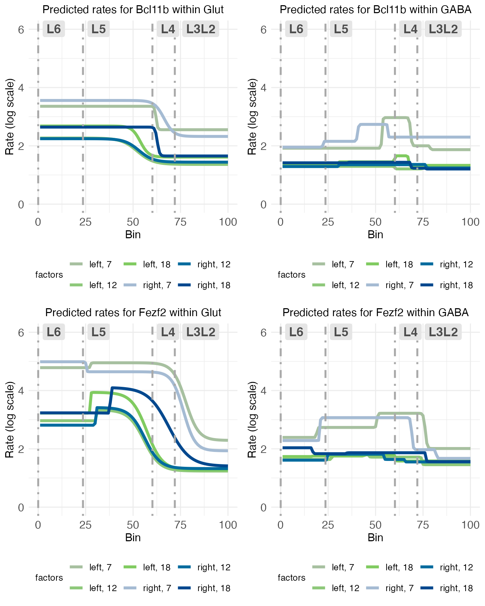
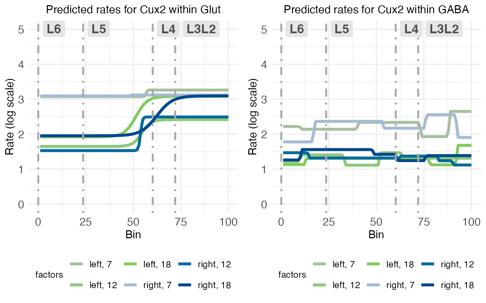
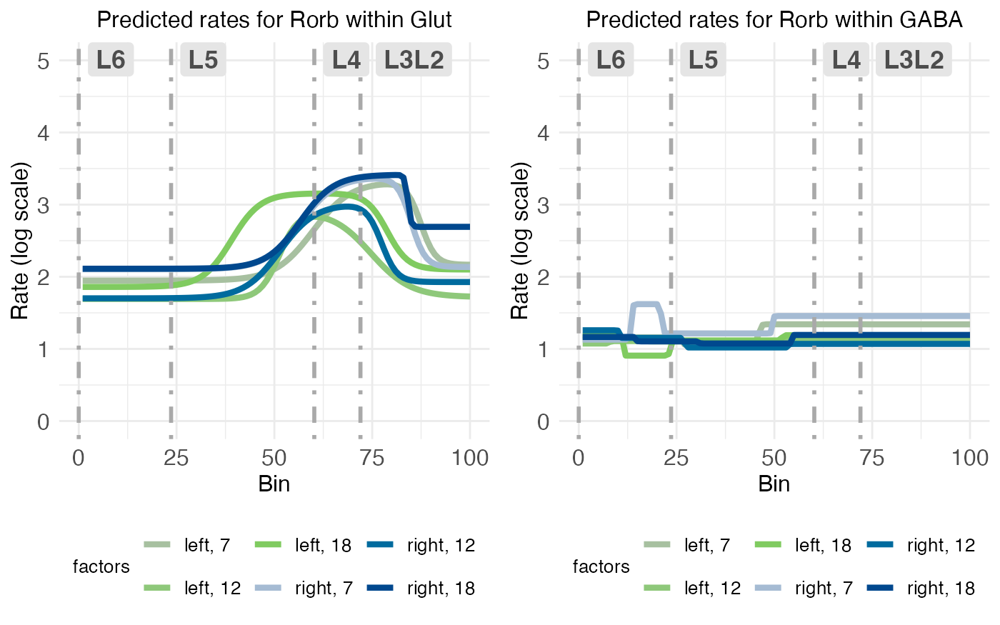
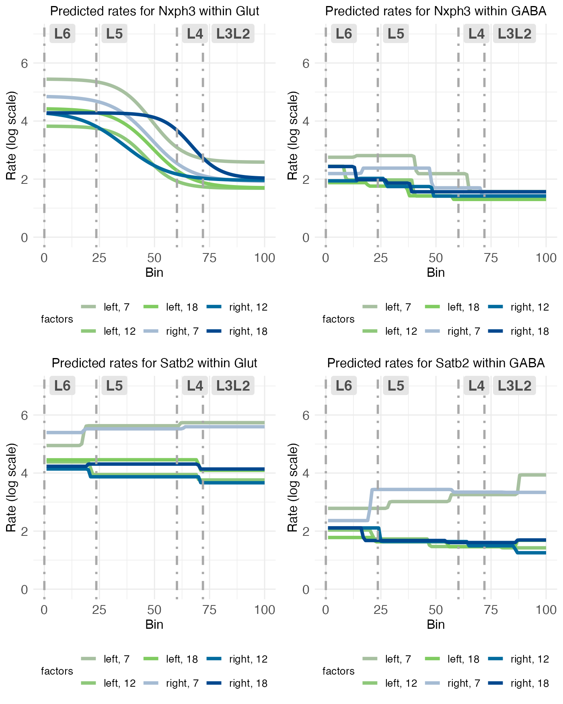
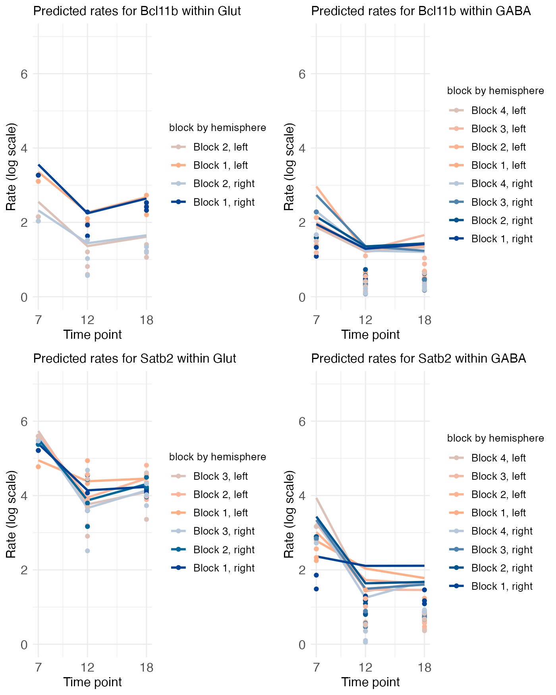
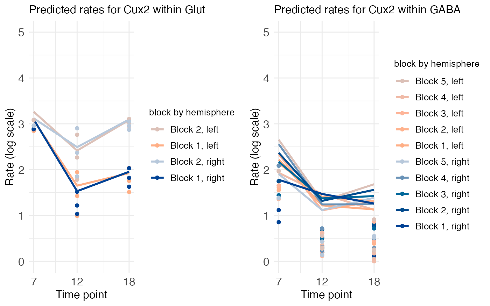
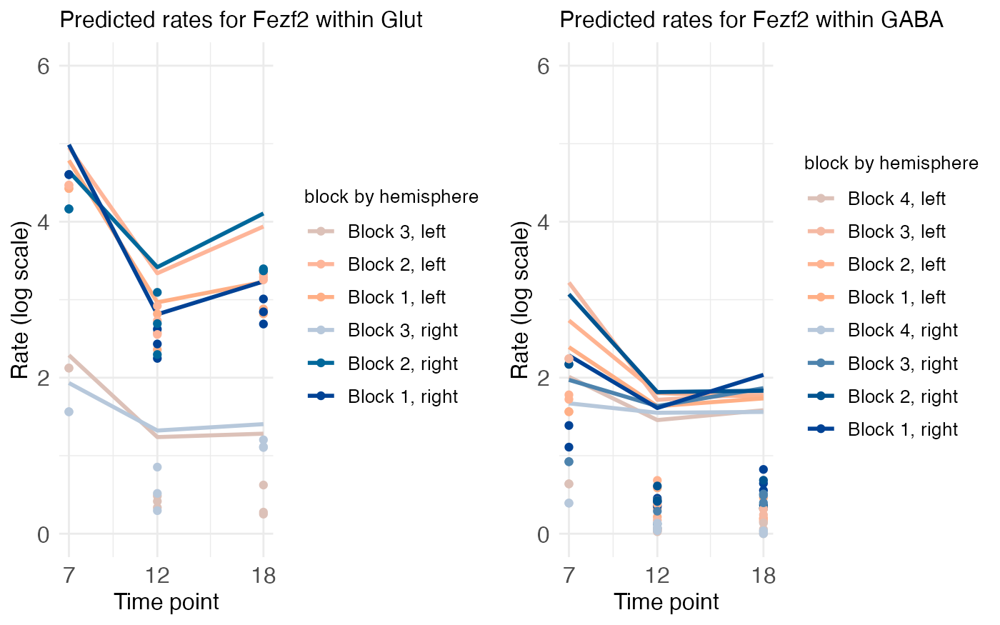
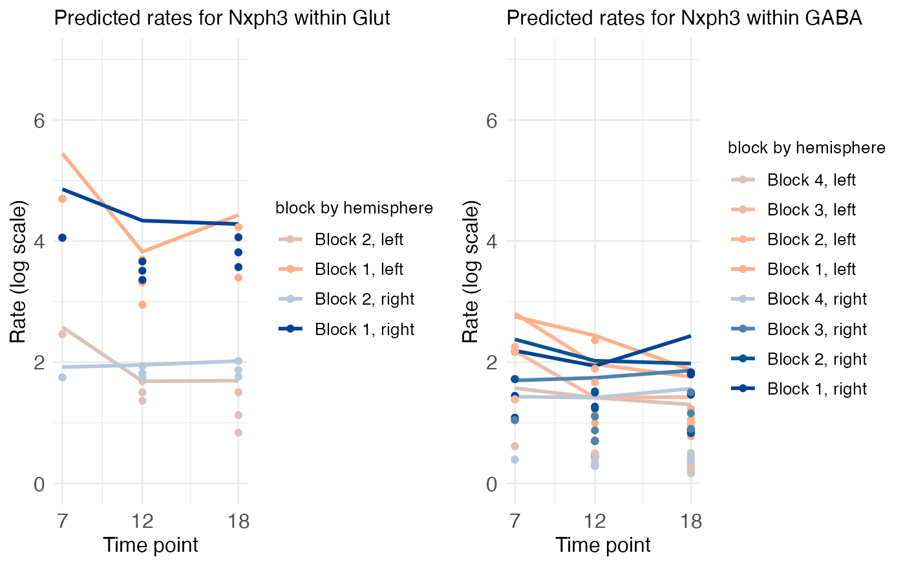
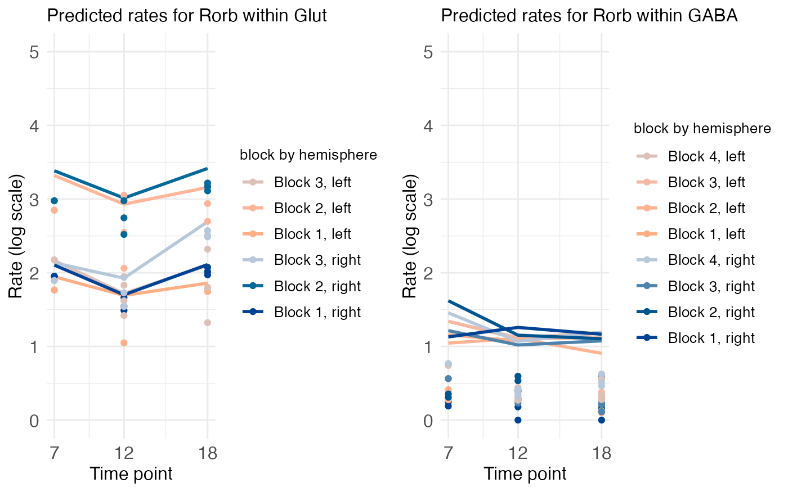

Modeling cell types
Michael Barkasi
2025-11-25
tutorial_multicontext.RmdIntroduction
Most biological tissue will contain many different cell types. As all cells have the same DNA, what distinguishes cell types is the set of genes they express. Hence, when analyzing the spatial distribution of gene transcripts, it’s important to consider the kinds of cells producing those transcripts. Wisp is able to model different cell types using the context variable.
Data and cell-typing
This tutorial will use MERFISH data collected from the auditory cortex of mice. The data has been preprocessed into laminar coordinates as described in the tutorial on modeling the cortical-laminar axis (see also this preprint). As with all data appropriate for wispack, and in line with well-known modeling functions in R (e.g., lme4::lmer() and stats::lm()), the data must be in long format. That is, each row must correspond to a single observation, which when modeling spatial transcriptomics data will typically be a count of transcripts from an RNA species in a single cell.
countdata <- read.csv(
system.file(
"extdata",
"ACx_laminar_countdata_demo_with_celltype.csv",
package = "wispack"
)
)
print(head(countdata))## count bin celltype_MMC gene mouse hemisphere age
## 1 0 96 OEC Bcl11b 1 left 12
## 2 0 95 Immune Bcl11b 1 left 12
## 3 0 98 MB Glut Bcl11b 1 left 12
## 4 0 100 Astro-Epen Bcl11b 1 left 12
## 5 0 99 IT-ET Glut Bcl11b 1 left 12
## 6 0 99 MB GABA Bcl11b 1 left 12Notice that this data is the same as the data used in the time series tutorial, except that instead of the context column filled with the placeholder “cortex”, there is a celltype_MMC column filled with the following cell type annotations:
unique_celltypes <- unique(countdata$celltype_MMC)
cat(
"\nNumber of unique cell types:", length(unique_celltypes), "\n",
"\nCell types:", paste0(unique_celltypes, collapse = ", "))##
## Number of unique cell types: 31
##
## Cell types: OEC, Immune, MB Glut, Astro-Epen, IT-ET Glut, MB GABA, Vascular, CNU-HYa Glut, OPC-Oligo, NP-CT-L6b Glut, CTX-MGE GABA, CB Glut, TH Glut, MY GABA, MY Glut, CNU-MGE GABA, HY GABA, P Glut, MH-LH Glut, OB-CR Glut, OB-IMN GABA, Pineal Glut, CTX-CGE GABA, LSX GABA, P GABA, CNU-HYa GABA, CNU-LGE GABA, DG-IMN Glut, HY Glut, CB GABA, MB DopaThese annotations were determined using the Allen Institute’s MapMyCells tool, although the purpose of this tutorial is not to explain how to do cell typing.
As thirty-one cell types is too many for demonstration purposes, let’s simplify to just three: “Glut”, “GABA”, and “other”.
# Make masks
Glut_mask <- grepl("Glut", countdata$celltype_MMC)
GABA_mask <- grepl("GABA", countdata$celltype_MMC)
other_mask <- !(Glut_mask | GABA_mask)
# Apply new annotations
countdata$celltype_MMC[Glut_mask] <- "Glut"
countdata$celltype_MMC[GABA_mask] <- "GABA"
countdata$celltype_MMC[other_mask] <- "other"
# Print results
unique_celltypes <- unique(countdata$celltype_MMC)
cat(
"\nNumber of unique cell types:", length(unique_celltypes), "\n",
"\nCell types:", paste0(unique_celltypes, collapse = ", "))##
## Number of unique cell types: 3
##
## Cell types: other, Glut, GABACutting down to three cell types will both make the results more easy to visualize and speed up model fitting. Unfortunately, the number of model parameters related to fixed effects is a multiple of the number of contexts being modeled. This is because each species is treated as independent across contexts, e.g., expression of SLC17A7 (a gene producing the protein vGLUT which loads glutamate into synaptic vesicles) in glutamatergic neurons is presumably independent of its expression in GABAergic neurons. So, for example, if there are fixed-effect treatment levels and genes being modeled, that will be parameters per model component. There are three model component types (rate, transition point, and transition point slope) and the precise number of model components depends on the number of transition points per gene. Suppose all genes have one transition point, so, two rate values and one transition point and slope value. In that case, there are parameters. If instead of one context (the tissue sample) we have contexts (e.g., cell types), that raises the number of parameters related to fixed effects to .
Fortunately, the number of random-effect parameters is independent of the number of contexts, as random effects are consistent across contexts while varying between species. For example, if one mouse expresses more SLC17A7 than another mouse, that effect is assumed to be the same regardless of cell type. This is because the modeling of random effects by warping factors is intended to capture variation from external noise (e.g., tissue preparation), rather than from internal biological variation (e.g., cell type differences).
Lastly, we’re modeling layer-specific genes, so it’s also useful to grab cortical layer boundaries estimated for this data independent of wisp (using manual CCFv3 registration). These boundary estimates will only be used for plotting and visualization after fitting the model, not for fitting the model itself.
boundary_path <- system.file(
"extdata",
"ACx_layer_boundary_bins.csv",
package = "wispack"
)
layer.boundary.bins <- read.csv(boundary_path)Fitting a wisp model with cell types
The data frame countdata has no column named “context”, so the context column needs to be specified along with the names for the species, ran, and timeseries variables.
# Define variables in the dataframe for the model
data.variables <- list(
context = "celltype_MMC",
species = "gene",
ran = "mouse",
timeseries = "age"
)With data loaded and variables set, we can fit the wisp model. As it’s not necessary for demonstrating cell-type modeling, we’ll only fit the model (fit_only = TRUE) without running any statistical parameter estimation.
library(wispack, quietly = TRUE)
model <- wisp(
count.data = countdata,
variables = data.variables,
fit_only = TRUE,
model.settings = list(LROwindow_factor = 2.0),
plot.settings = list(
print.plots = FALSE,
dim.bounds = colMeans(layer.boundary.bins),
title_size = 12,
pred.type = "pred.log",
count.type = "count.log",
count.alpha.ran = 0.0,
pred.alpha.ran = 0.0
),
verbose = TRUE
)##
##
## Parsing data and settings for wisp model
## ----------------------------------------
##
## Model settings:
## buffer_factor: 0.05
## ctol: 1e-06
## max_penalty_at_distance_factor: 0.01
## LROcutoff: 2
## LROwindow_factor: 2
## rise_threshold_factor: 0.8
## max_evals: 1000
## rng_seed: 42
## warp_precision: 1e-07
## round_none: TRUE
## inf_warp: 450359962.73705
##
## Plot settings:
## print.plots: FALSE
## dim.bounds: 72, 60.2, 23.6, 0
## pred.type: pred.log
## count.type: count.log
## splitting_factor:
## CI_style: TRUE
## label_size: 5.5
## title_size: 12
## axis_size: 12
## legend_size: 10
## count_size: 1.5
## count_jitter: 0.5
## count.alpha.ran: 0
## count.alpha.none: 0.25
## pred.alpha.ran: 0
## pred.alpha.none: 1
##
## Variable dictionary:
## count: count
## bin: bin
## context: celltype_MMC
## species: gene
## ran: mouse
## timeseries: age
## fixedeffects: hemisphere, age
##
## Parsed data (head only):
## ------------------------------
## count bin context species ran hemisphere timeseries
## 1 0 96 other Bcl11b 1 left 12
## 2 0 95 other Bcl11b 1 left 12
## 3 0 98 Glut Bcl11b 1 left 12
## 4 0 100 other Bcl11b 1 left 12
## 5 0 99 Glut Bcl11b 1 left 12
## 6 0 99 GABA Bcl11b 1 left 12
## ----
##
## Initializing Cpp (wspc) model
## ----------------------------------------
##
## Infinity handling:
## machine epsilon: (eps_): 2.22045e-16
## pseudo-infinity (inf_): 1e+100
## warp_precision: 1e-07
## implied pseudo-infinity for unbounded warp (inf_warp): 4.5036e+08
##
## Extracting variables and data information:
## Found max bin: 100.000000
## Fixed effects:
## "hemisphere" "timeseries"
## Ref levels:
## "left" "7"
## Time series detected:
## "7" "12" "18"
## Created treatment levels:
## "ref" "right" "12" "18" "right12" "right18"
## Context grouping levels:
## "GABA" "Glut" "other"
## Species grouping levels:
## "Bcl11b" "Cux2" "Fezf2" "Nxph3" "Rorb" "Satb2"
## Random-effect grouping levels:
## "none" "1" "2" "3" "4" "5"
## Total rows in summed count data table: 64800
## Number of rows with unique model components: 648
##
## Creating summed-count data columns and weight matrix:
## Random level 0, 1/6 complete
## Random level 1, 2/6 complete
## Random level 2, 3/6 complete
## Random level 3, 4/6 complete
## Random level 4, 5/6 complete
## Random level 5, 6/6 complete
##
## Making extrapolation pool:
## row: 2160/10800
## row: 4320/10800
## row: 6480/10800
## row: 8640/10800
## row: 10800/10800
##
## Making initial parameter estimates:
## Extrapolated 'none' rows
## Took log of observed counts
## Estimated gamma dispersion of raw counts
## Estimated change points
## Found average log counts for each context-species combination
## Estimated initial parameters for fixed-effect treatments
## Built initial beta (ref and fixed-effects) matrices
## Initialized random-effect warping factors
## Made and mapped parameter vector
## Number of parameters: 1044
## Constructed grouping variable IDs
## Size of boundary vector: 6372
##
## Fitting model to data
## ----------------------------------------
##
## Setting boundary penalty coefficients
## Initial neg_loglik: 32031.9
## Initial neg_loglik with penalty: 32352.6
## Initial min boundary distance: 0.01
## Final neg_loglik: 28702.3
## Final neg_loglik with penalty: 28864.6
## Final min boundary distance: 0.0874674
## Number of evaluations: 312
## Checking feasibility of provided parameters
## ... no tpoints below buffer
## ... no NAN rates predicted
## ... no negative rates predicted
## Provided parameters are feasible
## Initial boundary distance (want > 0): 0.0874674
##
## Making rate-count plots...
## Making time series plots...Unpacking the results
When given different contexts, wisp will make different rate-count and time-series plots for each context. For the big picture, let’s compare the reference levels for all gene between glutamatergic and GABAergic neurons.
plt_Glut <- model[["plots"]][["ratecount"]][["plot_pred.log_context_Glut"]] + theme(legend.position = "bottom") + ylim(c(0, 7))
plt_GABA <- model[["plots"]][["ratecount"]][["plot_pred.log_context_GABA"]] + theme(legend.position = "bottom") + ylim(c(0, 7))
g <- arrangeGrob(plt_Glut, plt_GABA, ncol = 2)
grid.draw(g)
There are a few things to notice, which exemplify how gene expression varies between cell types.
- Expression levels for these six genes are much higher in glutamatergic neurons compared with GABAergic neurons.
- The characteristic bump in RORB expression in L4 is only there is glutamatergic neurons; it is gone in GABAergic neurons.
- Conversely, there appears to be a bump is BCL11B expression in L4 of GABAergic neurons which is absent in glutamatergic neurons.
- NXPH3 and SATB2 expression takes on roughly the same shape in both cell types, with higher expression in deeper layers for NXPH3 and higher expression in surface layers in SATB2, but the expression levels are dramatically higher overall in glutamatergic neurons.
Fixed-effect structure
These are trends in the reference level, which is the left hemisphere at postnatal day (P) 7. What about the fixed effects of age and hemisphere? To compare these across cell types, we can look at rate-count plots of individual genes showing predicted expression rates at all treatment levels.
plt_Glut1 <- model[["plots"]][["ratecount"]][["plot_pred.log_context_Glut_fixEff_Bcl11b"]] + theme(legend.position = "bottom") + ylim(c(0, 6))
plt_GABA1 <- model[["plots"]][["ratecount"]][["plot_pred.log_context_GABA_fixEff_Bcl11b"]] + theme(legend.position = "bottom") + ylim(c(0, 6))
plt_Glut2 <- model[["plots"]][["ratecount"]][["plot_pred.log_context_Glut_fixEff_Fezf2"]] + theme(legend.position = "bottom") + ylim(c(0, 6))
plt_GABA2 <- model[["plots"]][["ratecount"]][["plot_pred.log_context_GABA_fixEff_Fezf2"]] + theme(legend.position = "bottom") + ylim(c(0, 6))
g <- arrangeGrob(plt_Glut1, plt_GABA1, plt_Glut2, plt_GABA2, ncol = 2)
grid.draw(g)
Starting with BCL11b, we see that the bump in L4 at P7 isn’t confined to the left hemisphere in GABAergic cells, but also appears (perhaps shifted down into L5) in the right as well. Curiously, not only do expression levels drop with age (P12, P18), but the bump seems to disappear in both hemispheres. In contrast, the up-regulation of BCL11b in deep layers (L5 and L6) in glutamatergic neurons is stable across age and hemisphere, albeit with a notable drop after P7.
Similar to BCL11B, FEZF2 expression in GABAergic cells seems to show a bilateral bump, this time across all of L5 and L4, which disappears after P7. In glutamatergic neurons, FEZF2 expression parallels BCL11b just as closely, albeit with higher overall expression and, perhaps, with retained up-regulation in L5 after P7.
plt_Glut <- model[["plots"]][["ratecount"]][["plot_pred.log_context_Glut_fixEff_Cux2"]] + theme(legend.position = "bottom") + ylim(c(0, 5))
plt_GABA <- model[["plots"]][["ratecount"]][["plot_pred.log_context_GABA_fixEff_Cux2"]] + theme(legend.position = "bottom") + ylim(c(0, 5))
g <- arrangeGrob(plt_Glut, plt_GABA, ncol = 2)
grid.draw(g)
In CUX2 we see relatively flat expression across layers in GABAergic neurons, with an overall drop in expression level after P7. In contrast, while expression is constant across layers in glutamatergic neurons at P7, it only drops selectively, in deep layers (L5 and L6) after P7.
plt_Glut <- model[["plots"]][["ratecount"]][["plot_pred.log_context_Glut_fixEff_Rorb"]] + theme(legend.position = "bottom") + ylim(c(0, 5))
plt_GABA <- model[["plots"]][["ratecount"]][["plot_pred.log_context_GABA_fixEff_Rorb"]] + theme(legend.position = "bottom") + ylim(c(0, 5))
g <- arrangeGrob(plt_Glut, plt_GABA, ncol = 2)
grid.draw(g)
A closer look at RORB expression confirms the expected up-regulation in L4 in glutamatergic neurons. The absence of this bump in L4 in GABAergic neurons seems to hold bilaterally and across ages. In fact, there’s little (if any) interesting up-regulation in GABAergic neurons, except perhaps a small bump in L6 in the right hemisphere at P7.
plt_Glut1 <- model[["plots"]][["ratecount"]][["plot_pred.log_context_Glut_fixEff_Nxph3"]] + theme(legend.position = "bottom") + ylim(c(0, 7))
plt_GABA1 <- model[["plots"]][["ratecount"]][["plot_pred.log_context_GABA_fixEff_Nxph3"]] + theme(legend.position = "bottom") + ylim(c(0, 7))
plt_Glut2 <- model[["plots"]][["ratecount"]][["plot_pred.log_context_Glut_fixEff_Satb2"]] + theme(legend.position = "bottom") + ylim(c(0, 7))
plt_GABA2 <- model[["plots"]][["ratecount"]][["plot_pred.log_context_GABA_fixEff_Satb2"]] + theme(legend.position = "bottom") + ylim(c(0, 7))
g <- arrangeGrob(plt_Glut1, plt_GABA1, plt_Glut2, plt_GABA2, ncol = 2)
grid.draw(g)
Finally, as observed in the reference level, NXPH3 and SATB2 expression is extremely similar across glutamatergic and GABAergic neurons, albeit with higher levels across the board in glutamatergic neurons.
Time-series plots
Temporal trajectories of the count (y-axis) across age (x-axis) can be visualized with the time-series plots. These show some interesting patterns on their own. For example, while BCL11B shares spatial pattern with FEZF2, its temporal pattern is more similar to that of SATB2.
plt_Glut1 <- model[["plots"]][["timeseries"]][["plot_pred.log_context_Glut_timeseries_Bcl11b"]] + ylim(c(0, 7)) + theme(plot.title = element_text(hjust = 0.0))
plt_GABA1 <- model[["plots"]][["timeseries"]][["plot_pred.log_context_GABA_timeseries_Bcl11b"]] + ylim(c(0, 7)) + theme(plot.title = element_text(hjust = 0.0))
plt_Glut2 <- model[["plots"]][["timeseries"]][["plot_pred.log_context_Glut_timeseries_Satb2"]] + ylim(c(0, 7)) + theme(plot.title = element_text(hjust = 0.0))
plt_GABA2 <- model[["plots"]][["timeseries"]][["plot_pred.log_context_GABA_timeseries_Satb2"]] + ylim(c(0, 7)) + theme(plot.title = element_text(hjust = 0.0))
g <- arrangeGrob(plt_Glut1, plt_GABA1, plt_Glut2, plt_GABA2, ncol = 2)
grid.draw(g)
The similar trajectories of the count (y-axis) across age (x-axis) for glutamatergic and GABAergic neurons for BCL11B and SATB2 suggest a similar effect from age, regardless of cell type, hemisphere, or cortical layer (block). What is different between the cell types, however, is that while BCL11B expression in glutamatergic neurons varies by cortical layer in glutamatergic neurons (with higher expression in the deeper layers, block 1), it is constant across cortical layers in GABAergic neurons.
plt_Glut <- model[["plots"]][["timeseries"]][["plot_pred.log_context_Glut_timeseries_Cux2"]] + ylim(c(0, 5)) + theme(plot.title = element_text(hjust = 0.0))
plt_GABA <- model[["plots"]][["timeseries"]][["plot_pred.log_context_GABA_timeseries_Cux2"]] + ylim(c(0, 5)) + theme(plot.title = element_text(hjust = 0.0))
g <- arrangeGrob(plt_Glut, plt_GABA, ncol = 2)
grid.draw(g)
Similar trajectories of the count (y-axis) across age (x-axis) are also seen for glutamatergic and GABAergic neurons for CUX2, albeit the similarity only holds for the deeper block (block 1) of the glutamatergic cells. The more superficial block (block 2) of glutamatergic neurons shows a trajectory different from that found in GABAergic neurons, with expression levels dipping at P12 before recovering at P18.
plt_Glut <- model[["plots"]][["timeseries"]][["plot_pred.log_context_Glut_timeseries_Fezf2"]] + ylim(c(0, 6)) + theme(plot.title = element_text(hjust = 0.0))
plt_GABA <- model[["plots"]][["timeseries"]][["plot_pred.log_context_GABA_timeseries_Fezf2"]] + ylim(c(0, 6)) + theme(plot.title = element_text(hjust = 0.0))
g <- arrangeGrob(plt_Glut, plt_GABA, ncol = 2)
grid.draw(g)
While the GABAergic neurons show a temporal trajectory for FEZF2 expression that is similar to that seen for BCL11B and CUX2, the glutamatergic neurons show variation across cortical layers (blocks), but no real lateralization in temporal trajectory.
plt_Glut <- model[["plots"]][["timeseries"]][["plot_pred.log_context_Glut_timeseries_Nxph3"]] + ylim(c(0, 7)) + theme(plot.title = element_text(hjust = 0.0))
plt_GABA <- model[["plots"]][["timeseries"]][["plot_pred.log_context_GABA_timeseries_Nxph3"]] + ylim(c(0, 7)) + theme(plot.title = element_text(hjust = 0.0))
g <- arrangeGrob(plt_Glut, plt_GABA, ncol = 2)
grid.draw(g)
NXPH3, on the other hand, shows lateralization of the temporal trajectory in both glutamatergic and GABAergic neurons. While the patterns in GABAergic neurons are hard to discern visually, there is a clear pattern in the glutamatergic neurons, with a dip in expression at P12 with recovery at P18, in the left but not the right hemisphere.
plt_Glut <- model[["plots"]][["timeseries"]][["plot_pred.log_context_Glut_timeseries_Rorb"]] + ylim(c(0, 5)) + theme(plot.title = element_text(hjust = 0.0))
plt_GABA <- model[["plots"]][["timeseries"]][["plot_pred.log_context_GABA_timeseries_Rorb"]] + ylim(c(0, 5)) + theme(plot.title = element_text(hjust = 0.0))
g <- arrangeGrob(plt_Glut, plt_GABA, ncol = 2)
grid.draw(g)
RORB is perhaps the most difficult to interpret visually, at least for glutamatergic neurons, which possibly have complex temporal trajectories interacting with both cortical layer and hemisphere. GABAergic neurons, on the other hand, show little variation along any dimension.